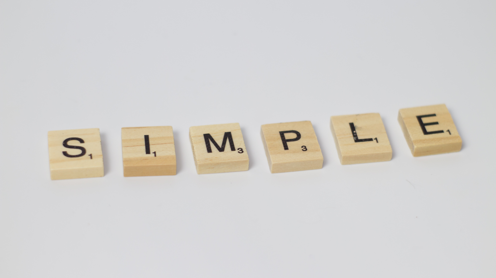

Introdução a Python
Se você é iniciante em programação poderia estar se perguntando:
"será que realmente vale a pena aprender Python?"
acredito que todos nos que começamos aprender a programar nos perguntamos
qual seria a melhor linguagem para aprendermos, para que não perdessemos nosso tempo
afinal esse tempo é precioso, aqui você poderá ver alguns pontos sobre isso e decidir por
sí mesmo:
Empregabilidade

De acordo com o site simplilearn JavaScript e python são as duas linguagens mais populares
na industria de startup, com uma grande demanda, não só no Brasil, mas em empregos no exterior
muitas vezes podendo imigrar ou então trabalhar ganhando em dolar e trabalhando homeoffice.
Facilidade

Python e uma das limguagens mais fáceis de se aprender, com uma linguagem de alto nível,
muito parecida com a linguagem do ser humano e mais afastado da linguagem da maquina, se torna
de facil aprendizado, podendo assim investir menos tempo aprendendo.
Bibliotecas
Python tem uma das mais ativas comunidades e uma vasta biblioteca, dando cada vez mais comandos,
e funcionalidades para a linguagem, podendo ser ultilixada desde um programa de computador para
aprendizado de inteligência artificial até um aplicativo mobile.
Salário

Python está entre as 10 linguagens mais bem pagas em 2022, no exterior o salário de um desenvolvedor
Python pode variar de 99 mil dolares por ano até 500 mil dolares por ano, cerca de 9 a 41 mil dolar
por mês, já no Brasil os ganhos ficam por volta de 2 a 12 mil por mês.
Bom esses são alguns dos pontos que podemos pensar antes de escolhermos uma linguagem de programação, eu particularmente sou suspeito em falar sobre python, pois pretendo ser um desenvolvedor python um dia, porém tenho a certeza de que se você e um iniciante motivado de programação deveria dar pelomenor uma chance a essa tão proeminente linguagem.